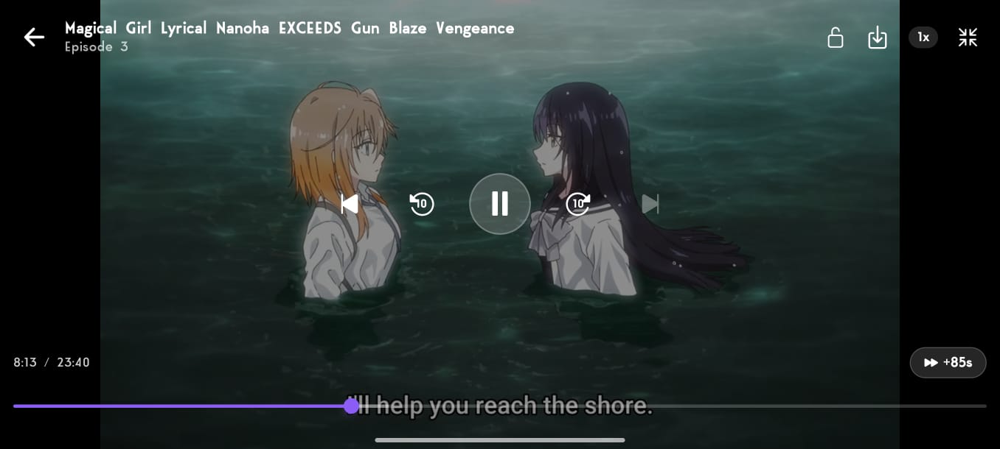
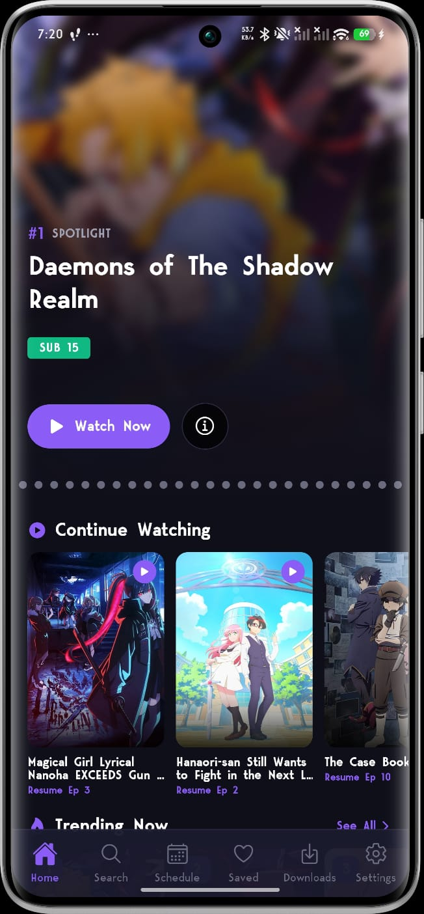
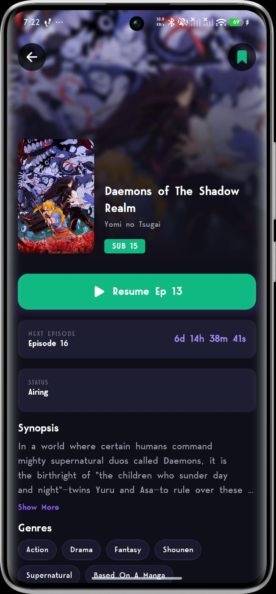
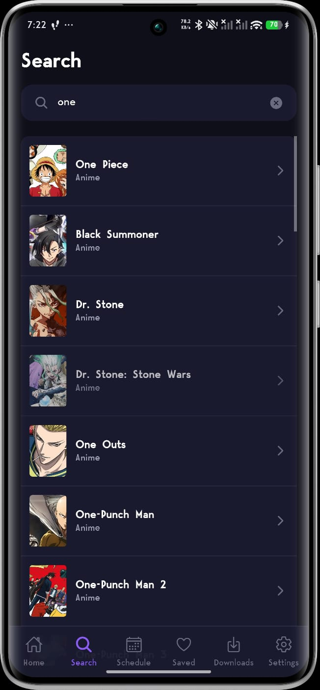
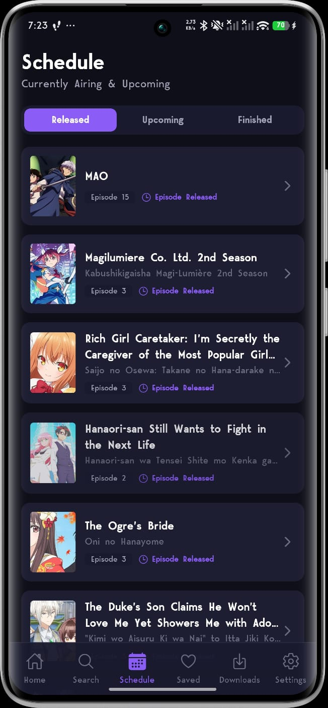
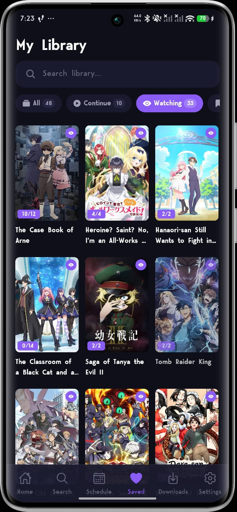
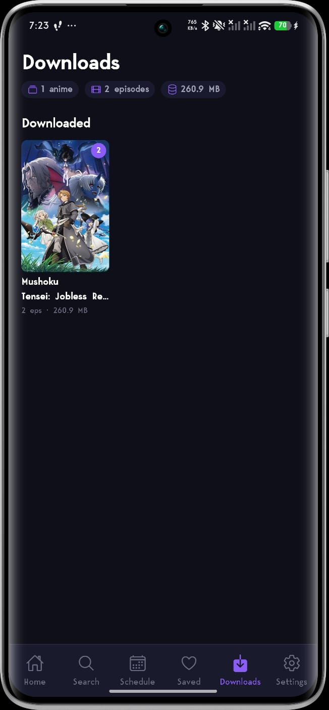

Anime Streaming,
Redefined.
Nani-me is a modern, premium anime discovery and streaming experience built for Android. Browse thousands of titles, track your progress, download episodes for offline viewing, and stream on both your smartphone and your television.

A Better Way to Watch
Nani-me values privacy, flexibility, and performance above all — everything important lives on your device.
No Accounts, No Tracking
No sign-up, no profile, nothing phoning home. Everything runs on your device and works the moment you open it — the same on both the phone and TV editions.
Offline Downloads
Take your shows anywhere. Download episodes on mobile, organized neatly per series with progress bars and file sizes — then watch fully offline with resume, next/previous episode, and shared watch history.
Smart Local Library
Track your anime with saved statuses — "Watching," "Watch Later," and "Completed" — plus automatic watch history and resume points. Everything is stored offline on your own device.
Premium Playback
Hassle-free HLS streaming with playback speeds from 0.5× to 2×, double-tap gesture seeking, and auto-play of the next episode with a countdown. All streams are hard-subbed — subtitles are always part of the picture, no setup needed.
Release Schedule
Never miss a premiere. A comprehensive, timezone-aware weekly calendar tracks upcoming and recently aired episodes so you always know what drops next.
Self-Updating
Both editions receive over-the-air updates. When something breaks or improves, the fix arrives automatically the next time you open the app — no reinstall, no waiting.
Explore the App Editions
Switch below to discover the tailored experience built for each screen size.

Nani-me Mobile
A modern, smooth experience built with Expo and React Native, putting the massive anime world in your pocket — fast, private, and fully self-contained.
-
01
Dynamic Spotlight Home
A featured spotlight carousel backed by living rails: Continue Watching, Trending Now, Episode Released, Upcoming, and Finished Airing — with See All pages for each.
-
02
Deep Catalog & Instant Search
Detailed pages with synopses, scores, studios, related titles, and recommendations. Search shows live suggestions with posters as you type, and every genre is browsable.
-
03
Offline Downloads
Download episodes straight from the episode list. Downloads are organized per series, show live progress, and play back offline with resume and next/previous episode support.
-
04
Library & Weekly Schedule
Mark shows as Watching, Watch Later, or Completed, and follow a timezone-aware weekly release calendar. Everything is saved locally, keeping your watchlist private.
Nani-me TV
A dedicated port built on react-native-tvos, designed to make watching anime on your living room screen extremely comfortable.
-
01
D-Pad Native Focus Rails
Navigate comfortably from your couch with focus-driven TV rows and card outlines designed specifically for remote controls, plus a Leanback launcher banner.
-
02
Continue Watching Rail
Pick up exactly where you left off. A home-screen rail updates with your history, and playback progress is saved automatically every few seconds.
-
03
Remote-First Player
Press OK to play or pause, tap left/right to seek 10s, or hold to accelerate to 30s and 60s jumps with a live indicator. Press up any time to reveal the controls.
-
04
Smart Playback Tools
Press down for an integrated episode picker with a full episode strip. Episodes auto-mark as watched at 90% and auto-advance to the next one.
See Nani-me in Action
Real screenshots from the mobile app — browse, track, and watch offline.





Which Edition Has What?
Both editions share your library concepts — here is exactly how they differ.
| Feature | Mobile | TV |
|---|---|---|
| Home rails (Spotlight, Trending, New Episodes) | ✓ | ✓ |
| Continue Watching with resume | ✓ | ✓ |
| Saved library (Watching / Watch Later / Completed) | ✓ | ✓ |
| Weekly release schedule | ✓ | ✓ |
| Genre browsing | ✓ | ✓ |
| Search | Instant suggestions | D-pad friendly |
| Offline downloads | ✓ | — |
| Playback speed (0.5× – 2×) | ✓ | — |
| Skip intro (+85s) | ✓ | — |
| Auto-play next episode | ✓ | ✓ |
| Subtitles | Hard subs only | Hard subs only |
| Seeking controls | Double-tap gestures | Hold-to-accelerate (10s/30s/60s) |
| Over-the-air updates | ✓ | ✓ |
Install in Under a Minute
Nani-me is distributed as a direct APK — install once, and updates arrive over-the-air.
On Your Phone
- Download the APK from the button below.
- Allow the install — if prompted, enable "Install unknown apps" for your browser in Android settings.
- Open the APK and tap Install. That's it.
- Stay current automatically — future fixes are applied over-the-air when you open the app.
On Your TV
- Get the TV APK onto your TV — the easiest route is the free Downloader app from your TV's app store.
- Enter the APK link in Downloader (or sideload via USB /
adb install). - Install and launch — Nani-me appears in your apps row with its own TV banner.
- Updates apply themselves over-the-air on launch, so you rarely need to sideload again.
Download Nani-me
Choose your platform below to download the latest APK files directly.
Nani-me Mobile
Android App (Phones & Tablets)- Version v2.3.0
- Size ~41 MB
- Requirement Android 7.0+ (64-bit)
- Downloads Offline supported
- Updates Over-the-air
Doesn't work on your device? Older 32-bit phones and Intel-based devices can use the universal APK (v2.3.0, ~92 MB) instead.
Nani-me TV
Android TV App (Fire TV / Leanback)- Version v2.1.0
- Size ~84 MB
- Requirement Android TV / Fire OS
- Input D-Pad Remote Control
- Updates Over-the-air
Frequently Asked
Is Nani-me free?
Yes. There are no accounts, no subscriptions, and the app adds no advertising of its own. Everything — your library, history, and downloads — lives on your device.
Are there dubs or subtitle options?
No — Nani-me streams hard-subbed video only. Subtitles are burned directly into the picture, so they always work on every device. There are no separate subtitle tracks, subtitle settings, or dubbed audio options.
How do updates work?
Both editions use over-the-air updates: when you open the app, it checks for the latest fixes and applies them automatically. You only need to install a new APK for major releases.
Why isn't it on the Play Store?
Nani-me is distributed as a direct APK download from this page. Installing takes under a minute (see the install guide above), and after that the app keeps itself up to date.
Where is my watchlist stored? Is anything tracked?
Your saved shows, watch history, and downloads are stored only in the app's local storage on your device. There are no accounts and no analytics — nothing leaves your device except the requests needed to fetch content.
The app won't load or says it can't reach the source?
Some networks and internet providers block access to streaming content. Nani-me includes a DNS over HTTPS option in Settings — pick a provider such as Cloudflare, Google, Quad9 or AdGuard (or enter your own), and the app can usually connect again without needing a VPN. The change takes effect right away and covers both browsing and video playback.
Does Nani-me host any videos?
No. Nani-me does not host, upload, or store any media. It simply links to content available on third-party services — see the disclaimer below for details.